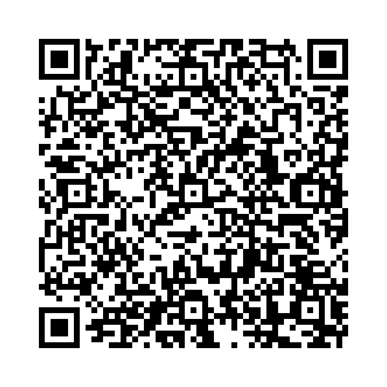

to不定詞 名詞的用法 は、文の中で名詞の役割を果たします。以下のように使われます：
to不定詞の形は "to + 動詞の原形" です。
以下の単語を並び替えて正しい文を作成しましょう。（和訳を参考にしてください）

問題1: (learn / important / English / is / to) - 英語を学ぶことは重要です。
解答: To learn English is important.
解説: 主語としてto不定詞を使っています。
問題2: (to / my / is / become / doctor / goal / a) - 私の目標は医者になることです。
解答: My goal is to become a doctor.
解説: 補語としてto不定詞を使っています。
問題3: (Paris / want / I / visit / to) - 私はパリを訪れたい。
解答: I want to visit Paris.
解説: 目的語としてto不定詞を使っています。
問題4: (to / her / was / read / hobby / books) - 彼女の趣味は本を読むことでした。
解答: Her hobby was to read books.
解説: 補語としてto不定詞を使っています。
問題5: (live / to / happy / want / life / a / they) - 彼らは幸せな生活を送りたい。
解答: They want to live a happy life.
解説: 目的語としてto不定詞を使っています。